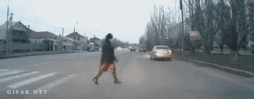

Conseils
En temps que piétons, nous devons respecter le code de la route. Voici une mise au point des règles à suivre pour se déplacer en limitant le danger :

| Conseil | Précisions |
|---|---|
| Pour traverser la chaussée, redoublez de prudence | Visibilité, feu vert, agent de circulation |
| Emprunter le passage piéton | Obligation s'il y en a un à moins 50m de soi |
| Doublez d'attention la nuit et en cas de faible éclairage | Porter des vêtements clairs |
| Même en présence d'aménagements urbains, ne pas baisser la garde | Rester vigilent sur les priorités |